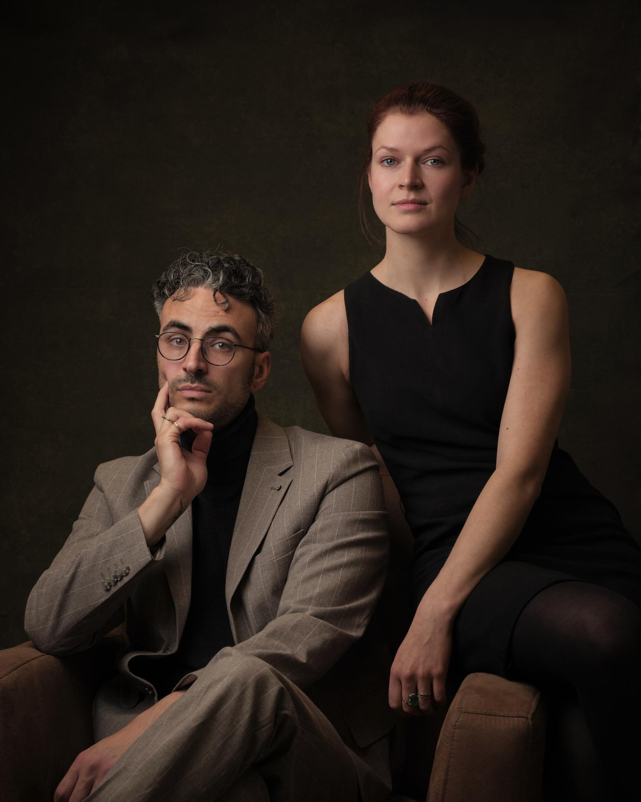
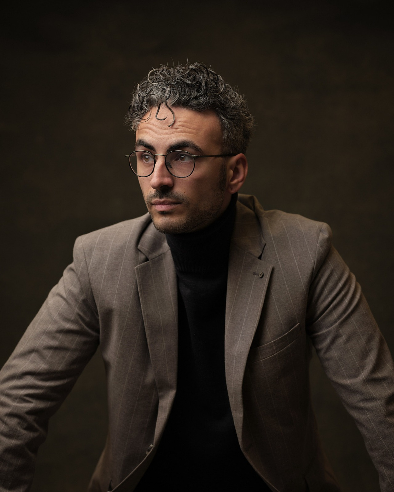
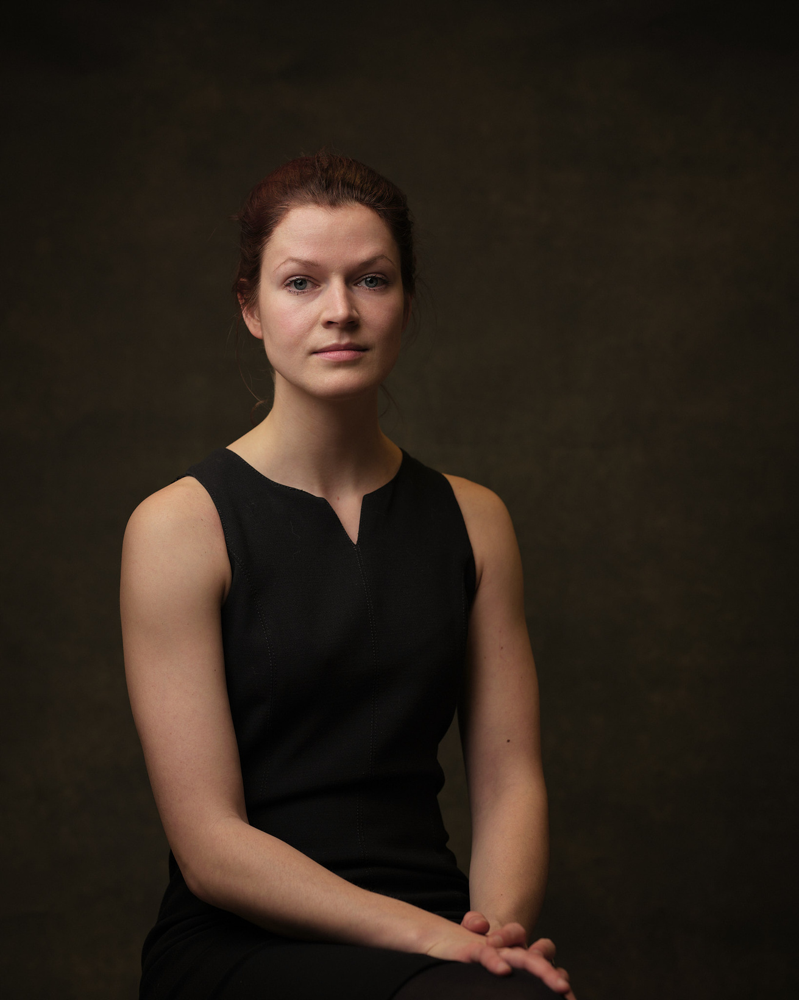

Politiek-Strategisch Adviseurs
Over ons
De politieke tijden zijn veranderd. Extreemrechts is in opkomst. De ene crisis volgt de andere op, en het internationaal recht blijkt optioneel. Tegelijkertijd lijken veel ambtsdragers de noblesse oblige voorbij: principes worden verkwanseld en de leugen regeert. Nieuwe partijen komen op, sterven dan weer uit, en verdrijven traditionele machtsblokken. Traditionele media lijken meer geïnteresseerd in clicks en likes dan informeren, en sociale media zijn nu hét gedoodverfde communicatiemiddel voor politici.

Nieuwe politiek voor progressieve politici
Er blijkt ruimte voor een progressief geluid dat weer gaat winnen
Onze methode
De trainingen van Dillingh & van Bronkhorst combineren cognitief-psychologische inzichten met een politiek-economische fundering. Zij bieden daarmee iets wat andere politieke communicatietrainingen niet bieden: een integrale theory of change.
Zo geven Dillingh & van Bronkhorst progressieve politici de tools om zich te verhouden tot de huidige politieke situatie, maar ook een langetermijnstrategie om hun idealen te doen winnen.
Wat is de taak van progressieve politici in deze tijden? Wat zijn de nieuwe gereedschappen? Wat zijn de nieuwe handelsperspectieven?
Groepstraining voor fracties
€700,- per dagdeel €1250,- hele dag
Individuele training voor politici
€950,- per dagdeel
Externe communicatieaudit
€1800,- per rapport
Alle prijzen zijn exclusief btw
Het team

Savriël Dillingh is social media expert en politiek filosoof. Hij was jarenlang politiek adviseur voor BIJ1-fractieleider Sylvana Simons. Savriël richtte het wetenschappelijk bureau van BIJ1 op en schreef de partijprogramma’s van meerdere lokale partijen, naast die van BIJ1. In 2026 promoveerde hij op een proefschrift over de politieke economie van het neoliberalisme.

Marthe van Bronkhorst is schrijver en neuropsycholoog. Zij maakte media voor de NPO en platform Radio Kookpunt en publiceerde in diverse kranten en tijdschriften, zowel journalistiek als wetenschappelijk. Met haar werk in de zorg staat zij midden in de maatschappij en zij heeft een breed netwerk in politieke en maatschappelijke bewegingen.